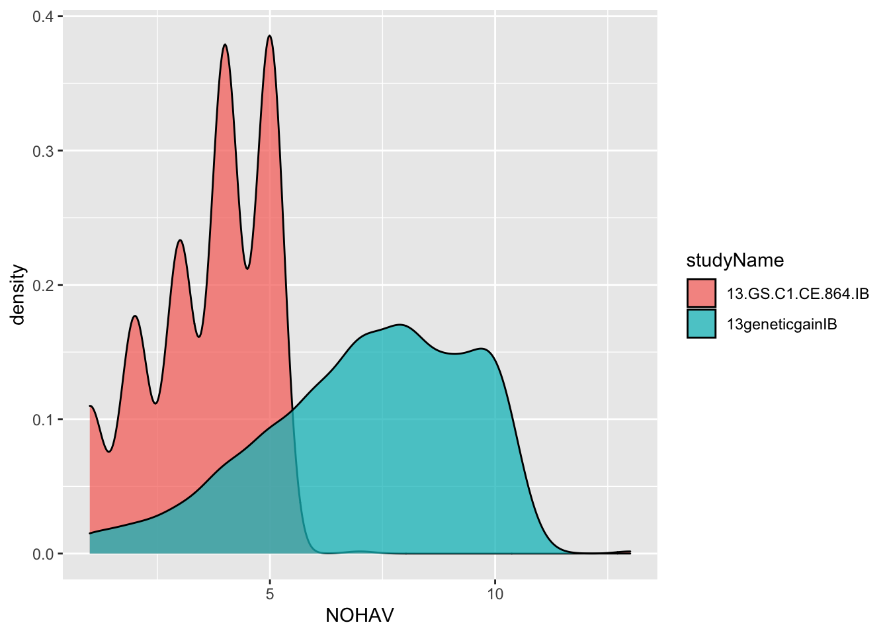

Chapter 4 Traits and Trait Abbreviations
Cassavabase downloads use very long column-names corresponding to the full trait-ontology name. For convenience, I replace these names with abbreviations, documented here. For eventual upload of analysis results, names will need to be restored to ontology terms.
I also use this opportunity to subselect traits.
traitabbrevs<-tribble(~TraitAbbrev,~TraitName,
"CMD1S","cassava.mosaic.disease.severity.1.month.evaluation.CO_334.0000191",
"CMD3S","cassava.mosaic.disease.severity.3.month.evaluation.CO_334.0000192",
"CMD6S","cassava.mosaic.disease.severity.6.month.evaluation.CO_334.0000194",
"DM","dry.matter.content.percentage.CO_334.0000092",
"RTWT","fresh.storage.root.weight.per.plot.CO_334.0000012",
"NOHAV","plant.stands.harvested.counting.CO_334.0000010")
traitabbrevs %>% rmarkdown::paged_table()Run function renameAndSelectCols() to rename columns and remove unselected traits.
dbdata<-renameAndSelectCols(traitabbrevs,
indata=dbdata,
customColsToKeep = c("observationUnitName"))
#> Warning in mask$eval_all_mutate(quo): NAs introduced by
#> coercion
#> Joining, by = "TraitName"4.1 QC Trait Values
At this point in the pipeline, we should check the all trait values are in allowable ranges. Different ways to approach this. Feel free to make some plots of your data!
The database also has mechanisms to ensure trait values are only within allowable ranges. Nevertheless, as a habit, I have an simple ad hoc approach to this:
# comment out the traits not present in this dataset
dbdata<-dbdata %>%
mutate(CMD1S=ifelse(CMD1S<1 | CMD1S>5,NA,CMD1S),
CMD3S=ifelse(CMD3S<1 | CMD3S>5,NA,CMD3S),
CMD6S=ifelse(CMD6S<1 | CMD6S>5,NA,CMD6S),
#CMD9S=ifelse(CMD9S<1 | CMD9S>5,NA,CMD9S),
# CGM=ifelse(CGM<1 | CGM>5,NA,CGM),
# CGMS1=ifelse(CGMS1<1 | CGMS1>5,NA,CGMS1),
# CGMS2=ifelse(CGMS2<1 | CGMS2>5,NA,CGMS2),
DM=ifelse(DM>100 | DM<=0,NA,DM),
RTWT=ifelse(RTWT==0 | NOHAV==0 | is.na(NOHAV),NA,RTWT),
# SHTWT=ifelse(SHTWT==0 | NOHAV==0 | is.na(NOHAV),NA,SHTWT),
# RTNO=ifelse(RTNO==0 | NOHAV==0 | is.na(NOHAV),NA,RTNO),
NOHAV=ifelse(NOHAV==0,NA,NOHAV),
NOHAV=ifelse(NOHAV>42,NA,NOHAV)
#RTNO=ifelse(!RTNO %in% 1:10000,NA,RTNO)
)4.2 Post-QC: composite traits
Now that component traits are QC’d, it’s time to compute any composite traits.
By composite traits, I mean traits computed from combinations of other traits.
Examples for cassava: season-wide mean disease severity, harvest index, and fresh root yield.
4.3 Season-wide mean disease severity
# [NEW AS OF APRIL 2021]
## VERSION with vs. without CBSD
## Impervious to particular timepoints between 1, 3, 6 and 9 scores
# Without CBSD (West Africa)
dbdata<-dbdata %>%
mutate(MCMDS=rowMeans(.[,colnames(.) %in% c("CMD1S","CMD3S","CMD6S","CMD9S")], na.rm = T)) %>%
select(-any_of(c("CMD1S","CMD3S","CMD6S","CMD9S")))
# With CBSD (East Africa)
# dbdata<-dbdata %>%
# mutate(MCMDS=rowMeans(.[,colnames(.) %in% c("CMD1S","CMD3S","CMD6S","CMD9S")], na.rm = T),
# MCBSDS=rowMeans(.[,colnames(.) %in% c("CBSD1S","CBSD3S","CBSD6S","CBSD9S")], na.rm = T)) %>%
# select(-any_of(c("CMD1S","CMD3S","CMD6S","CMD9S","CBSD1S","CBSD3S","CBSD6S","CBSD9S")))4.4 Fresh root yield (FYLD)
RTWT (fresh root weight per plot in kg) –> FYLD (fresh root yield in tons per hectare)
\[FYLD = \frac{RTWT_{kg / plot}}{MaxHarvestedPlantsPerPlot \times PlantSpacing}\times10 \]
NOTE: MaxHarvestedPlantsPerPlot in formula above is to distinguish from the plantsPerPlot meta-data field, in case that a net-plot harvest is used. In other words, the value should be the total number of plants intended for harvest in a plot.
PlantSpacing is the area in \(m^2\) per plant.
In the example trial data, we the plantsPerPlot meta-data field is empty. Luckily, since there are only two trials, we make a quick summary of the NOHAV data, to determine the correct values.
RECOMMEND INPUTING plantsPerPlot meta-data to cassavabase
dbdata %>% count(studyYear,studyName,studyDesign,plotWidth,plotLength)
#> # A tibble: 2 × 6
#> studyYear studyName studyDesign plotWidth plotLength n
#> <int> <chr> <chr> <int> <dbl> <int>
#> 1 2013 13.GS.C1… Augmented 1 2.5 864
#> 2 2013 13geneti… Augmented 1 8 749So the GS.C1 trial has 2.5 \(m^2\) plots, the GeneticGain trial has 8 \(m^2\).
A quick density plot reveals that the GeneticGain trial was likely planted with 10 plants/plot, and the GS.C1.CE 5 plants/plot. (Disclosure: I know this is true from experience.)
dbdata %>%
ggplot(.,aes(x=NOHAV, fill=studyName)) + geom_density(alpha=0.75)
#> Warning: Removed 71 rows containing non-finite values
#> (stat_density).
dbdata %<>%
# plot area in meters squared
mutate(plotArea=plotWidth*plotLength,
# Number of plants per plot
plantsPerPlot=ifelse(studyName=="13geneticgainIB",10,5))dbdata %<>%
mutate(PlantSpacing=plotArea/plantsPerPlot,
FYLD=RTWT/(plantsPerPlot*PlantSpacing)*10)
dbdata %>% ggplot(.,aes(x=FYLD,fill=studyName)) + geom_density(alpha=0.75)
#> Warning: Removed 89 rows containing non-finite values
#> (stat_density).
Additional things to compute:
- log-transform yield traits: this is a habit based on experience. Linear mixed-models should have normally distributed homoskedastic residuals, if they don’t log-transform the response variable often helps. For FYLD and related traits, I always log-transform.
# I log transform yield traits
# to satisfy homoskedastic residuals assumption
# of linear mixed models
dbdata %<>%
mutate(DYLD=FYLD*(DM/100),
logFYLD=log(FYLD),
logDYLD=log(DYLD),
PropNOHAV=NOHAV/plantsPerPlot)
# remove non transformed / per-plot (instead of per area) traits
dbdata %<>% select(-RTWT,-FYLD,-DYLD)
dbdata %>% ggplot(.,aes(x=logFYLD,fill=studyName)) + geom_density(alpha=0.75)
#> Warning: Removed 89 rows containing non-finite values
#> (stat_density).
Debatable whether this is better. Let’s not dwell on it. Onward!
4.5 Check genotype-to-phenotype matches
In this step, in the past (see here for an example), I have had to use multiple external flat files and custom code, built over time, to figure out which DNA samples, if any, match eatch field plot.
With both genotypes and phenotypes derived from the database, this should not be an issue for this tutorial.
4.6 Check / “detect” experimental designs?
In this step, in the past, I have not been certain of the experimental designs of the trials I had downloaded. I was also not certain how the designs were represented in the column-names. For this reason, I developed another ad hoc custom code to “detect” the designs. I built the genomicMateSelectR function detectExptDesigns(). See an example here.
Should not be necessary for the example dataset. However, let’s check:
dbdata %>% count(studyName,studyDesign, numberBlocks,replicate, blockNumber, entryType)
#> # A tibble: 4 × 7
#> studyName studyDesign numberBlocks replicate blockNumber
#> <chr> <chr> <int> <int> <int>
#> 1 13.GS.C1.C… Augmented 1 1 1
#> 2 13.GS.C1.C… Augmented 1 1 1
#> 3 13geneticg… Augmented 1 1 1
#> 4 13geneticg… Augmented 1 1 1
#> # … with 2 more variables: entryType <chr>, n <int>4.7 Checklist and KPI
- [ ]